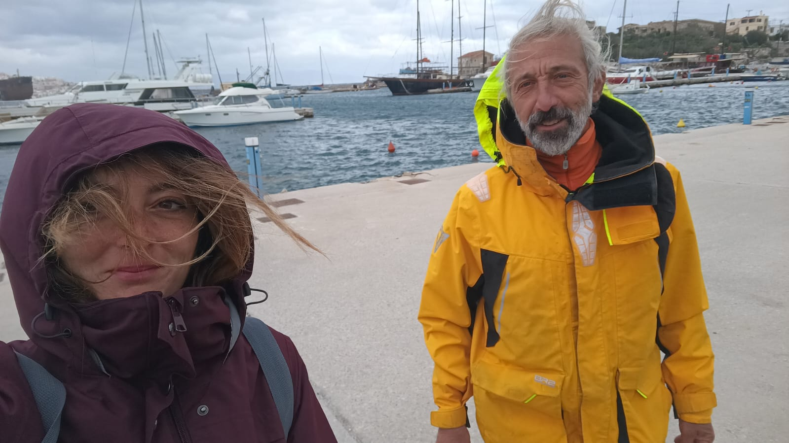

A giro per il mondo
Ciao, siamo Paolo e Giorgia, una coppia di navigatori fuori dall'ordinario.
Conosciuti per caso, abbiamo iniziato navigando insieme in Grecia.
Ed ora, per scelta attraverseremo
quella foce stretta
dov’Ercule segnò li suoi riguardi,
acciò che l’uom più oltre non si metta.
Giorgia, 27 anni, nel suo DNA sono state rilevate tracce di sale. Ha iniziato navigando da bambina con il papà e da più di un anno ha scelto di dedicarsi alla vita di mare navigando nel Mediterraneo. Fonti affermano che l'onda lunga al traverso sembra non essere di suo gradimento.
Paolo, 60 anni, lupo di mare, vive nella sua Ovni32 da 4 anni. Ha più 50.000 miglia di esperienza, ha navigato in lungo in largo il Mediterraneo e non solo. A memoria d'uomo mai avuto mal di mare. Traversata più lunga da Darwin a Durban.
Entro il 2024 attraverseremo l'Atlantico (vedi la rotta). Chi vuole può unirsi a noi per uno o più tratti.
Un singolo/a, una coppia, due amiche, due amici, sono i benvenuti. Avere esperienze non è fondamentale. Collaborare alle mansioni e contribuire alle spese è la ricetta che ci porterà a navigare insieme e in armonia alla scoperta di nuovi mari.
- © Paolo Cavallini
- Design: HTML5 UP